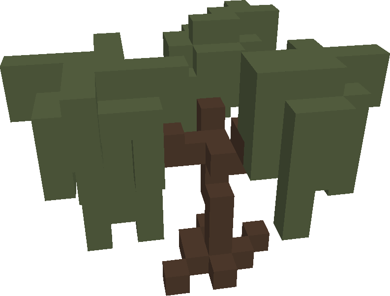

Немного о себе
Я студент, изучающий программирование. Мне нравится создавать игры, поэтому на данный момент я работаю над некоммерческой игрой, название которой - The Swap: Engage. Подробно об игре написано ниже.
Об игре
Пару слов о проекте. Это однопользовательская игра, в которой будут элементы шутера, стелса, выживания, а также проработанный сюжет.
Игроку необходимо торговать, исследовать мир (который не генерируется), крафтить и, конечно, сражаться. Он сможет и выращивать еду, коллекционировать
необычные предметы, выполнять ачивки (достижения), рыбачить, водить автомобили.
Проект активно развивается с 1 января 2021 года, когда я действительно загорелся этой идеей.
*Игра только для ПК
Сюжет
..Мы точно знали, когда это произойдет. Ученые это предвидели. Но последствия оказались куда хуже, чем мы предполагали. Это стало началом конца. Магнитные полюса Земли, как это случается раз в несколько десятков тысяч лет, меняются местами. На время этого процесса пропадает магнитное поле, которое сдерживало нас от солнечного радиоактивного излучения. Сильное облучение убивало миллионы людей, пока мы не заметили, что иногда люди приспосабливались и менялись. Радиация на них уже не действовала, и мы подумали, что это спасение. Но позже мы осознали, что те, кто изменились и приспособились стали вести себя по-другому. Одни стали вялыми и медленными, другие - быстрыми и сильными, но одно их объединяло - желание убивать. Мы стали защищатся, понимая, что одна ошибка - и все погибнут. Эти твари беспощадны. Мы уже не считали их своими друзьями, знакомыми. Чтобы обезопасить себя, мы построили бункер, в котором тебя и нашли. Прошло несколько месяцев с момента "Вспышки", однако сколько бы мы не пытались уничтожить всех тварей, их количество не убавлялось, как будто есть место, где они зарождаются....
Игроку необходимо уничтожить "Прорывы" - места, где рождаются твари. Оттуда они расходятся во все уголки мира.
Графика
Стиль графики - 3D воксельный. Вот примеры:


Скачать
Чтобы скачать любую версию игры надо перейти на Github и скачать выбранную Вами версию.
(Рекомендую скачивать последнюю стабильную версию)
Галлерея
.png)
.png)
.png)
.png)
.png)
.png)
.png)
.png)
.png)
.png)
Изменения
25.09.2020 - Создал проект
02.01.2021 |
03.01.2021 | - Добавление основных механик
04.01.2021 |
05.01.2021 - Добавлен Hotbar
06.01.2021 - Добавлена миникарта, полоска хп, экран смерти, немного изменен интерфейс
07.01.2021 |
08.01.2021 | - Добавлена граната, отображение хп врага, добавлена система стелс
09.01.2021 - Добавлен простой инвенарь, улучшен интеллект врагов
10.01.2021 |
11.01.2021 |
12.01.2021 |
13.01.2021 |
14.01.2021 |
15.01.2021 |
16.01.2021 | - Улучшение инвентаря, добавление контейнеров
17.01.2021 |
18.01.2021 |
19.01.2021 |
20.01.2021 |
21.01.2021 |
------------
22.01.2021 |
23.01.2021 |
24.01.2021 |
25.01.2021 | - Добавлена система торговли
26.01.2021 |
27.01.2021 |
28.01.2021 |
29.01.2021 |
------------
05.02.2021 |
06.02.2021 | - Изменена система торговли
------------
07.02.2021 |
08.02.2021 | - Добавлена возможность прицеливаться, миникарта стала круглой, небольшие доработки
09.02.2021 - Добавлен новый моб - стреляющий и бегающий
10.02.2021 - Немного изменена система спавна мобов
12.02.2021 - Добавлены аптечки, сильно улучшена система торговли
13.02.2021 - Немного улучшены мобы
14.02.2021 - Ограничена дальность стрельбы игрока, добавлено новое оружие, регенерация, масса оружия
15.02.2021 - 0.1 Alpha выпущена. А также массовая оптимизация
16.02.2021 - 0.2 Beta выпущена. Добавлена пауза
17.02.2021 - Улучшена система спавна врагов
18.02.2021 |
19.02.2021 | - Улучшение интерфейса: добавлена графика в UI, исправлены ошибки интерфейса
21.02.2021 - Доделана граната
22.02.2021 - Улучшена торговля
23.02.2021 |
24.02.2021 | - Небольшие доработки: анимации, эффекты и справления ошибок, оптимизации
25.02.2021 |
26.02.2021 - Добавлен спавнер контейнеров
27.02.2021 - Улучшение контейнеров и спавнера контейнеров
28.02.2021 - Добавлен бункер
02.03.2021 - Бункер изменен
03.03.2021 |
04.03.2021 | - Оптимизация и реализация Сборщика Мусора
05.03.2021 - Добавлен лифт в бункер, исправлены ошибки
06.03.2021 - Добавлена возможность быстро перемещать предметы
07.03.2021 - Небольшие оптимизации, исправлены ошибки
08.03.2021 - 0.3 Beta выпущена. Исправлены ошибки
09.03.2021 - Исправлены ошибки
10.03.2021 - Система крафта. Исправлены ошибки
11.03.2021 - Добавлена возможность разделять предметы
12.03.2021 |
13.03.2021 |
14.03.2021 | - Исправлены ошибки
15.03.2021 |
16.03.2021 |
------------
17.03.2021 |
18.03.2021 |
19.03.2021 |
20.03.2021 |
21.03.2021 |
22.03.2021 |
23.03.2021 |
24.03.2021 |
25.03.2021 |
26.03.2021 | - Улучшение врагов, добавление моделей и анимаций, оптимизация и подготовка к обновлению
27.03.2021 |
28.03.2021 |
29.03.2021 |
30.03.2021 |
31.03.2021 |
01.04.2021 |
02.04.2021 |
03.04.2021 |
04.04.2021 |
05.04.2021 - 0.4.27 Beta выпущена, справлены ошибки
06.04.2021 |
07.04.2021 |
08.04.2021 | - Исправлены ошибки, добавлены новые предметы, обновление зомби
09.04.2021 |
10.04.2021 |
------------
11.04.2021 |
12.04.2021 |
13.04.2021 |
14.04.2021 |
15.04.2021 |
16.04.2021 |
17.04.2021 |
18.04.2021 |
19.04.2021 |
20.04.2021 | - Исправлены ошибки, улучшен интерфейс
21.04.2021 |
22.04.2021 |
23.04.2021 |
24.04.2021 |
25.04.2021 |
26.04.2021 |
27.04.2021 |
28.04.2021 |
29.04.2021 | - Исправлены ошибки, рандомизирован дроп с зомби, добавлена книга крафтов
30.04.2021 |
01.05.2021 |
02.05.2021 |
03.05.2021 | - Исправлены ошибки
04.05.2021 |
05.05.2021 |
------------
06.05.2021 |
07.05.2021 |
08.05.2021 |
09.05.2021 |
10.05.2021 | - Исправлены ошибки, добавлена плавильная печь
11.05.2021 |
12.05.2021 |
13.05.2021 |
14.05.2021 |
------------
15.05.2021 |
16.05.2021 |
17.05.2021 |
18.05.2021 |
19.05.2021 | - Добавление графики, улучшение левел-дизайна
20.05.2021 |
21.05.2021 |
22.05.2021 |
23.05.2021 | - 0.5.72 Beta версия выпущена
------------
24.05.2021 |
25.05.2021 |
26.05.2021 |
27.05.2021 |
28.05.2021 |
29.05.2021 |
30.05.2021 | - Исправлены ошибки, добавлен прыжок, обновлено управление игроком
31.05.2021 |
01.06.2021 |
02.06.2021 |
03.06.2021 |
04.06.2021 |
------------
05.06.2021 |
06.06.2021 |
07.06.2021 |
08.06.2021 |
09.06.2021 |
10.06.2021 |
11.06.2021 |
12.06.2021 |
13.06.2021 |
14.06.2021 |
15.06.2021 | - Обновление зомби, переход в 3D
16.06.2021 |
17.06.2021 |
18.06.2021 |
19.06.2021 |
20.06.2021 |
21.06.2021 |
22.06.2021 |
23.06.2021 |
24.06.2021 |
25.06.2021 |
26.06.2021 |
Версии
О Нас
Мы - команда так или иначе заинтересованных в этом проекте любителей. Наш список регулярно обновляется:кто-то уходит, кто-то приходит. Все помогают по-немногу, но порой один человек может сильно помочь разработке.
@General Mumble - Дизайнер звука
Упоминания
@PixelStudio - 3D художник
@Enzo_Music - Дизайнер звука
@livdash - Дизайнер звука
@posmotrishka - Дизайнер звука
@JSimmons - Левел-дизайнер
@krill - Разработчик сайта
@EAZY BLACK - Разработчик сайта